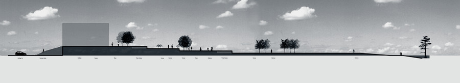

Site · Design
This course will develop your skills in site design through traditional and non-traditional models. You will be asked to explore landscape design at multiple scales from sketching to full scale mockups. The Fall 2008 iteration — the source for this archive — framed the studio as Site Design, working the Moss Point, Mississippi waterfront: a site in constant flux, examined through design precedents, natural phenomena, temporal change, and evolving programs. Projects moved from a travel sketchbook through precedent studies and site interpretation to intervention, strategy, and a final animated proposal.“Sites are constantly in flux through a broad range of changes in phenomena.” Project 03 · Experience / Interpret

About the studio
LA 3001 is the third-year core studio in the Robert Reich School of Landscape Architecture at Louisiana State University. It develops site design skills through traditional and non-traditional models, asking students to explore landscape design at multiple scales — from sketching to full-scale mockups.
Faculty: Bradley Cantrell, co-taught with Jeff Carney in the Fall 2008 iteration. Meeting: Monday, Wednesday, and Friday, 1:30–5:30.
This page documents the LA 3001 studio series (Fall 2005–2010), transcribed from the most complete year in the archive, Fall 2008 — Site Design Studio, which engaged the Moss Point, Mississippi waterfront.